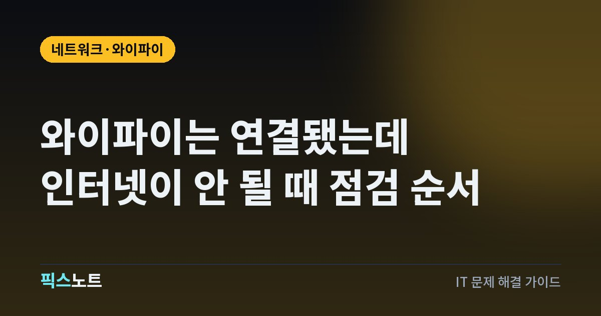

와이파이는 연결됐는데 인터넷이 안 될 때 점검 순서
와이파이는 연결됐지만 인터넷이 안 될 때 기기 문제와 공유기·회선 문제를 빠르게 나눠 확인하는 순서.

1. 다른 기기도 같은 증상인지 확인한다
휴대폰과 노트북처럼 두 기기를 같은 와이파이에 연결해 본다. 여러 기기에서 동시에 인터넷이 안 되면 공유기나 통신 회선 쪽을 먼저 보고, 한 기기만 안 되면 그 기기의 네트워크 설정이나 VPN, 보안 프로그램 쪽으로 범위를 좁힐 수 있다.
2. 특정 앱이나 사이트만 안 되는지 구분한다
웹사이트 하나만 열리지 않는지, 브라우저와 다른 앱 모두 인터넷이 안 되는지 확인한다. 와이파이 아이콘은 정상인데 특정 앱만 안 된다면 무선 연결 자체보다 앱, DNS, VPN, 방화벽 문제일 가능성이 높다.
3. 공유기와 모뎀 상태를 확인한다
공유기나 모뎀의 인터넷 표시등이 평소와 다른지 보고, 여러 기기에서 모두 문제가 있다면 장비를 재부팅한다. 모뎀과 공유기가 분리돼 있다면 전원을 껐다가 모뎀을 먼저 켜고 회선 연결이 잡힌 뒤 공유기를 켜는 편이 문제를 구분하기 쉽다.
4. 문제가 있는 기기에서 네트워크를 다시 연결한다
와이파이를 껐다 켜고, 필요하면 저장된 네트워크를 삭제한 뒤 비밀번호를 다시 입력한다. IP 주소를 정상적으로 받지 못했거나 저장된 연결 정보가 꼬인 경우 이 단계에서 해결될 수 있다.
5. VPN과 프록시를 잠시 확인한다
VPN이나 수동 프록시를 사용하는 경우 연결은 되어 있어도 인터넷이 막힐 수 있다. 최근 VPN 앱을 설치했거나 회사·학교용 네트워크 설정을 적용했다면 해당 설정을 잠시 끈 상태에서 다시 확인한다.
6. Windows라면 네트워크 문제 해결 도구를 실행한다
Windows에서는 설정의 네트워크 문제 해결 기능으로 어댑터와 연결 상태를 자동 진단할 수 있다. 진단 결과가 DNS나 어댑터 문제를 가리키면 그 결과를 기준으로 다음 조치를 진행한다.
7. 여러 기기에서 계속 안 되면 회선 장애를 확인한다
공유기 재부팅 뒤에도 여러 기기에서 인터넷이 안 되면 통신사 장애나 외부 회선 문제를 확인한다. 이 상황에서는 개별 기기를 초기화하기보다 통신사 장애 공지와 회선 진단을 먼저 보는 편이 빠르다.